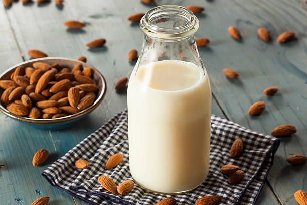

Almond Milk Recipe

Ingredients
- 2 16oz bottles of water
- 1 cup of raw almonds
- Nutmeg or High-quality strainer
- Blender
- Cinnamon powder and/or dates
- 30oz glass milk bottle
NOTE: Raw almonds must be soaked in filtered water for 8 hrs minimum before starting step-by-step
Step-by-step instructions
- Rinse almonds with water then put them in blender
- Add 2 bottles of water into blender, add a pinch of sea salt then blend for 90sec
- Pour almond milk through nutmeg/strainer to remove excess almonds onto a large bowl
- Once all excess almonds is removed, pour almond milk in blender (add cinnamon powder/dates - optional) then blend for 30 sec
- Pour almond milk through strainer onto bowl then pour into milk in glass milk bottle
- ENJOY!